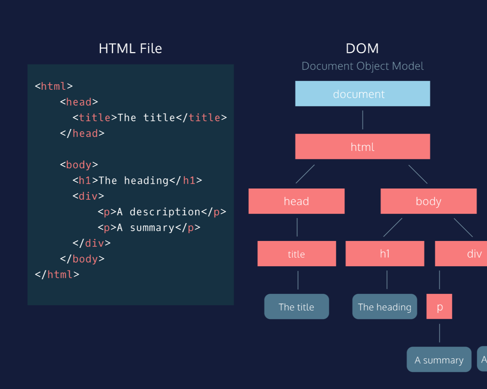
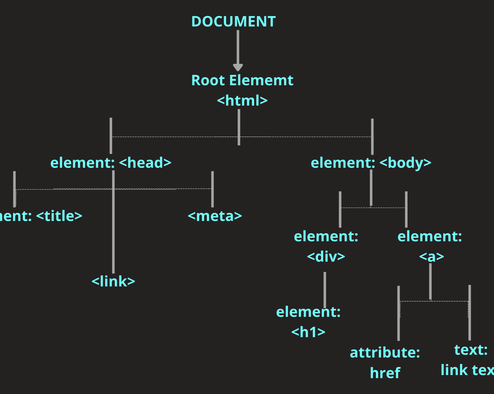
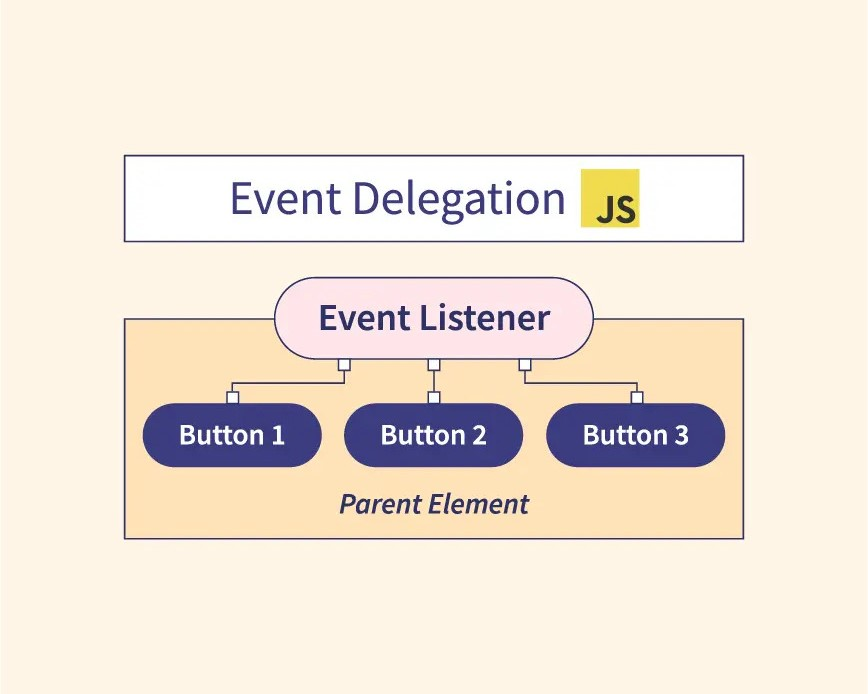
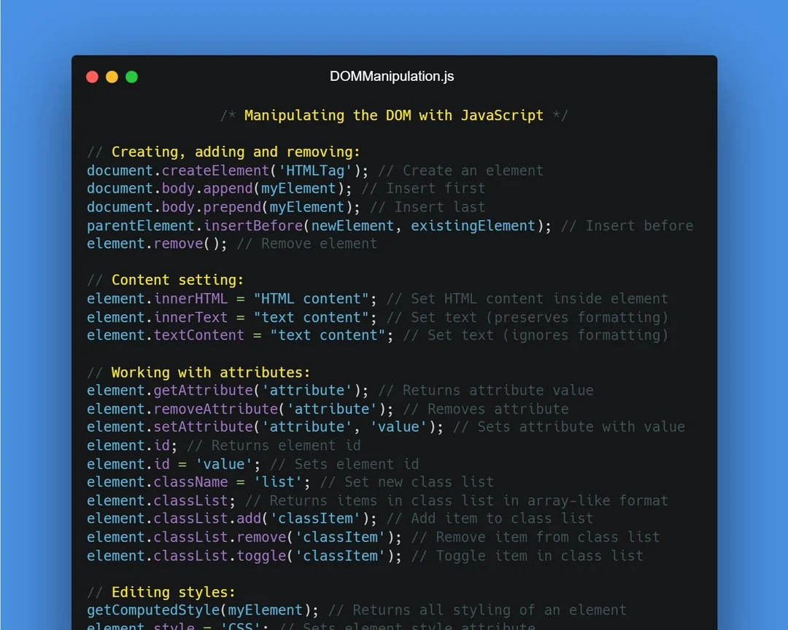

Read and Learn Javascript
Blog #01

The Document Object Model (DOM) is a programming interface that
represents the structure of a document, typically HTML or XML,
as a tree of objects. Each element, attribute, and piece of text
within the document is represented as a node in this tree,
allowing developers to interact with and manipulate the content,
structure, and style of the document dynamically.
The DOM enables programming languages, such as JavaScript, to
access and modify the document’s elements in real time,
facilitating tasks like updating the page content, handling
events, and responding to user actions.
By providing a standardized way to represent and interact with
documents, the DOM serves as a crucial foundation for creating
dynamic and interactive web applications.
Blog #02

Selecting elements from the Document Object Model (DOM) in
JavaScript is a fundamental task for interacting with web pages.
Various methods are available, each suited to different
scenarios.
For elements with unique IDs, getElementById() is efficient. For
elements sharing a class or tag name, getElementsByClassName()
or getElementsByTagName() can be used, respectively.
When dealing with complex selectors, querySelector() and
querySelectorAll() offer flexibility. By understanding these
methods, developers can effectively manipulate and interact with
web page elements.
Blog #03

Event delegation is a technique in the DOM (Document Object
Model) where a single event listener is added to a parent
element rather than attaching multiple event listeners to
individual child elements. This works because of event bubbling,
a process where an event triggered on a child element "bubbles
up" to its parent elements. By leveraging this bubbling
behavior, event delegation allows you to handle events on
dynamically added child elements without needing to reassign
event listeners every time a new element is added or modified.
Event delegation is especially useful for improving performance
when dealing with a large number of similar elements, such as a
list of items or buttons. Instead of attaching a separate event
listener to each element (which can be inefficient and
memory-consuming), you assign one listener to their common
ancestor, allowing it to manage events for all the children. It
also simplifies code and makes it easier to manage dynamic
content where elements are added or removed frequently.
Blog #04

Manipulating an element's attributes and styles in the DOM
involves using JavaScript to dynamically change the appearance
and behavior of HTML elements. To modify an element's
attributes, such as `src`, `href`, or `id`, you can use methods
like `setAttribute()` and `getAttribute()`. For example,
`element.setAttribute("id", "newId")` changes the ID of an
element, and `element.getAttribute("href")` retrieves the value
of an `href` attribute. Additionally, attributes like
`className` or `value` can be directly accessed and modified
through properties (e.g., `element.className = "newClass"`).
For styling, the `style` property is commonly used to change CSS
properties of an element. You can modify individual styles
directly, such as `element.style.color = "red"` to change the
text color, or `element.style.backgroundColor = "#000"` for
background color. This approach allows fine-grained control over
the inline styles of the element. Additionally, you can
dynamically add or remove entire CSS classes using
`classList.add()`, `classList.remove()`, or
`classList.toggle()`, which is often preferred for larger,
reusable style changes. These DOM manipulation techniques enable
developers to create interactive and responsive web pages.